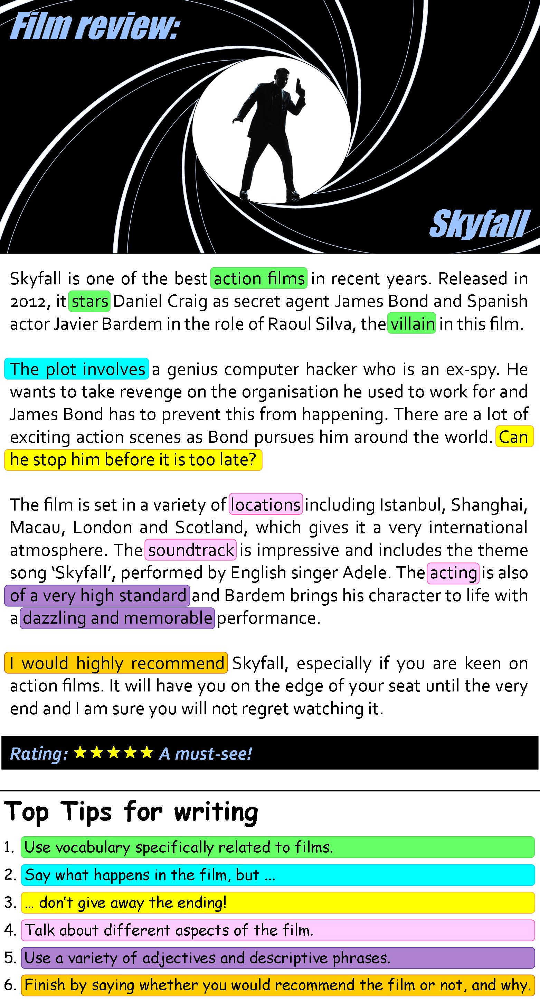

Instructions
Do the preparation exercise first. Then do the other exercises.
Reading

Discussion
What films have you seen lately? What did you think? Tell us about a film you've seen. But don't give away the ending!
Language level
Topics
Personal online tutoring
EnglishScore Tutors is the British Council’s one-to-one tutoring platform for 13- to 17-year-olds.

Comments